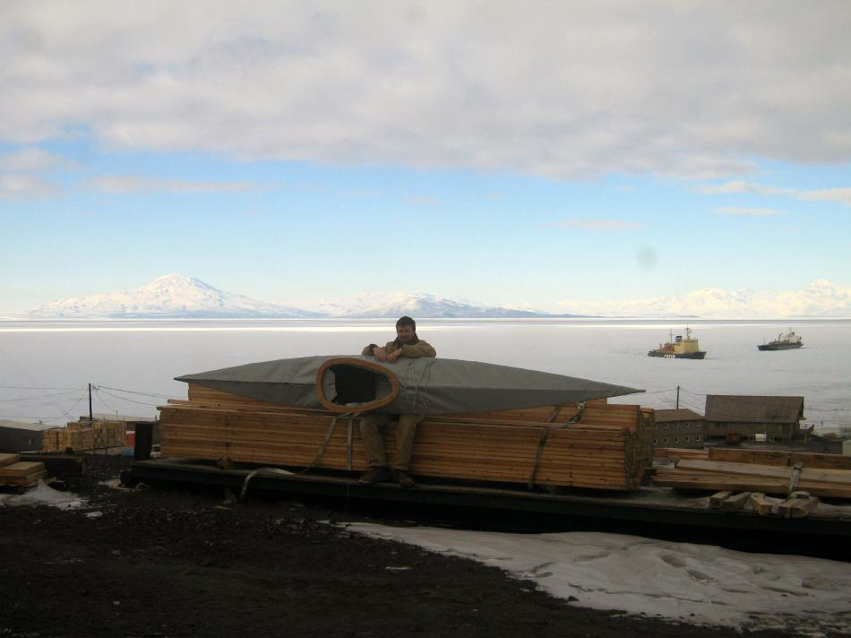

| (New) Sea Tour 15 by Del Medenbach (Antarctica) | Menu Previous Page Next Page |
|
 While working in Antarctica, Del built a Sea Tour 15 folder. Del wrote....These photos where taken in front of the Carpenters' shop where I built the boat over these many months with McMurdo Station and McMurdo Sound in the background. Also seen in the background is Mt. Discovery (left), Royal Society Mountain Range (Right), which is part of the Transantarctic Mountain Range, the Russian ice breaker ship 'Krasin' that is opening up the channel and a fuel tanker that is resupplying the stations fuel supply. I have decided to stick to the Bay of Islands in Northland New Zealand for her initiation. |
|